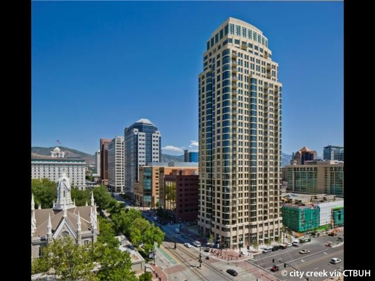

Conducted repairs and maintenance on various
campus buildings.
Responsibilities included patching drywall,
painting, maintaining parking lots, moving
equipment, and completing other tasks as
directed by supervisor.
During my time working at Utah Tech, I took the
initiative to design and develop a web
application that streamlined the process of
tracking paints used by the building maintenance
crew across campus. This application not only
improved the accuracy of paint inventories, but
also saved valuable time and resources. Through
this project, I gained valuable experience in
web development and demonstrated my ability to
proactively identify and address operational
inefficiencies. You can see more about the
process of making it Here If
you want to check out the site click Here.
Utah Property Management Association

99 West, The building I maintained
Position: Building Engineer
Location: Salt Lake City, UT
Date: November 2017 - June 2019
Maintained and repaired various building
systems, including HVAC, electrical, plumbing,
lighting, telecom/data, cable/satellite tv,
doors, windows, elevators, landscaping, garage
door operations, boilers, and fire suppression
systems.
Ensured the proper functioning of these systems,
responded to repair requests in a timely manner,
and performed preventative maintenance tasks as
assigned through the maintenance system and
building management.
Gained an in-depth understanding of areas of
commercial and residential buildings that have
chillers/boiler plants.
Collaborated with contractors in the building to
ensure that work was completed to the highest
standards and that all building systems were
maintained in a safe and functional condition.